空间规划作品集
国土空间总体规划 / 村庄规划 / 法定图件编制
黑龙江省某县-乡镇级国土空间总体规划（2021-2035年）
横向课题，项目总价值超100万元，聚焦镇村层面国土空间规划编制全流程，成果已入库待批复。
我的角色：核心技术人员，负责基数调研、法定图件编制、规划文本主笔、团队技术培训。
技术栈：ArcGIS Pro、Illustrator、Photoshop、无人机航拍、Python
案例一：某镇国土空间总体规划
负责镇域用地现状分析、三区三线划定、总体格局规划、用地规划、农业/产业空间布局、生活圈规划、基础设施规划、驻地详细规划及村庄传导管控表编制。
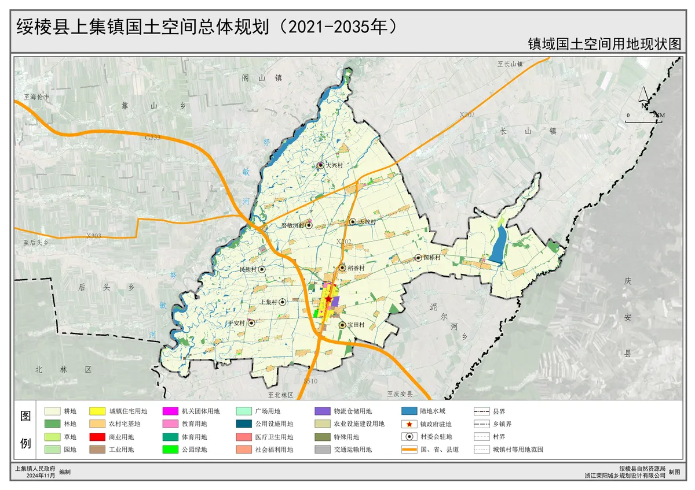
镇域国土空间用地用海现状
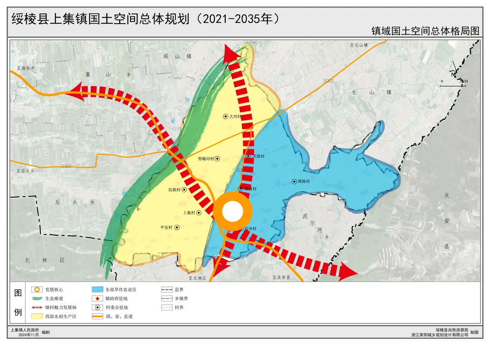
镇域国土空间总体格局
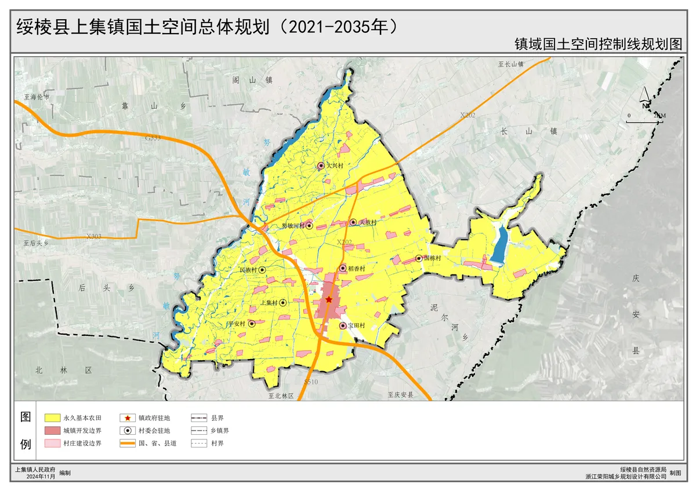
镇域国土空间控制线
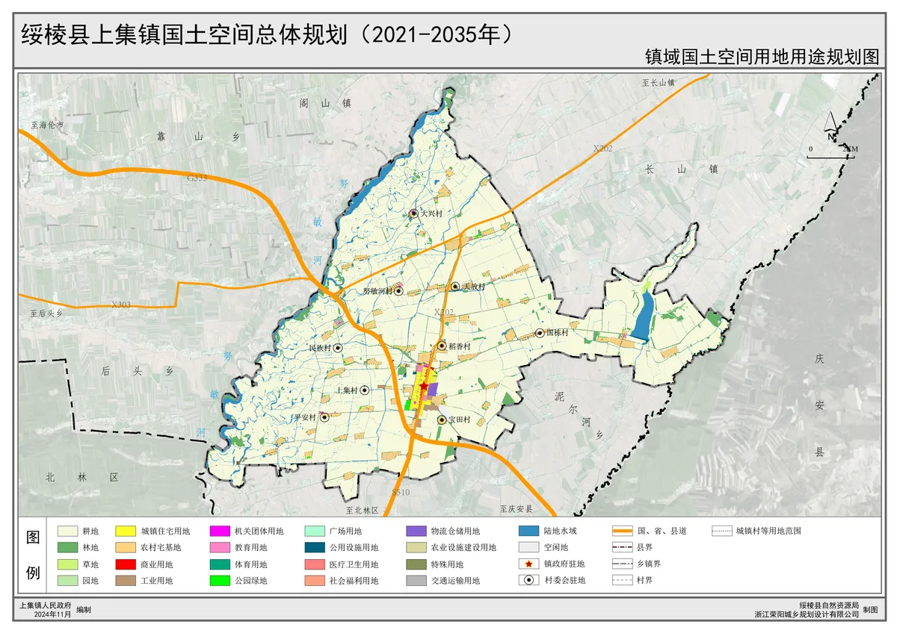
镇域国土空间用地用海规划
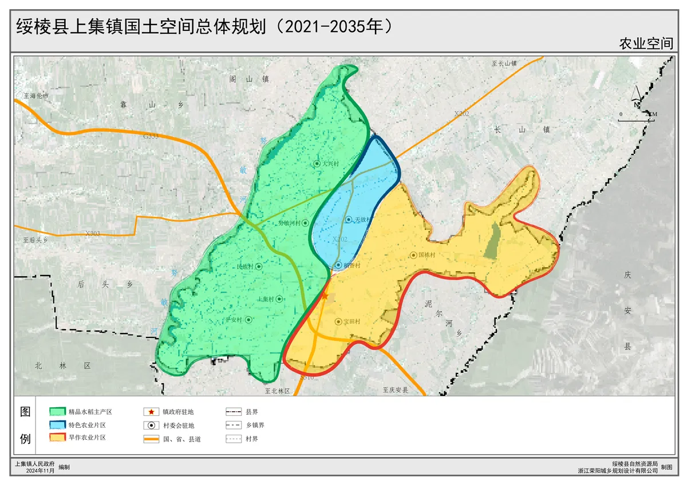
镇域农业空间格局规划
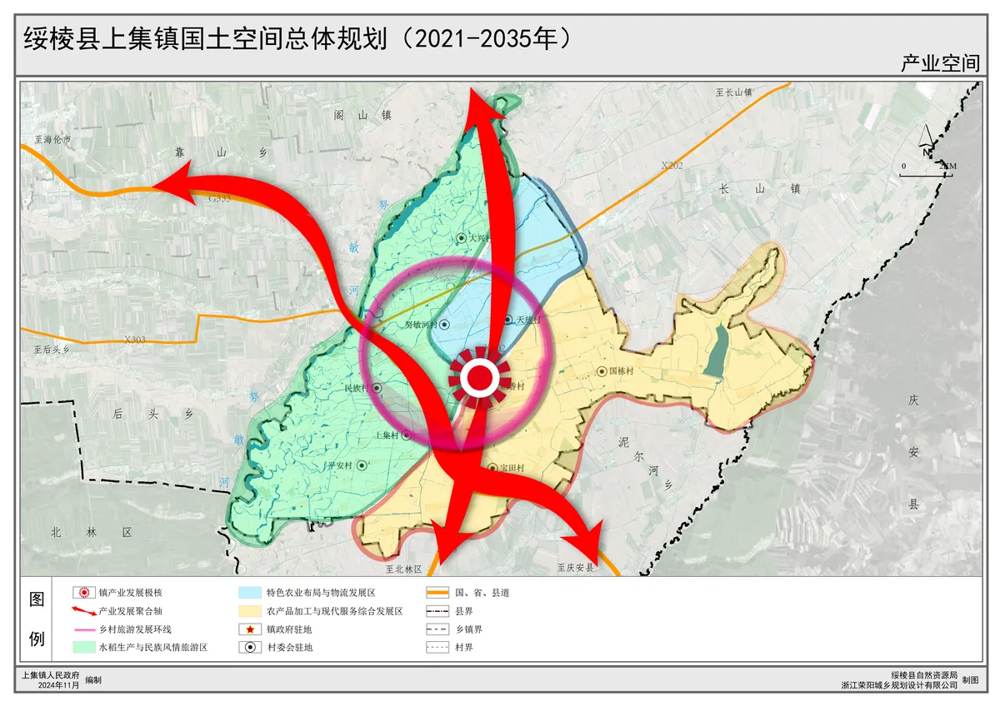
镇域产业空间格局规划
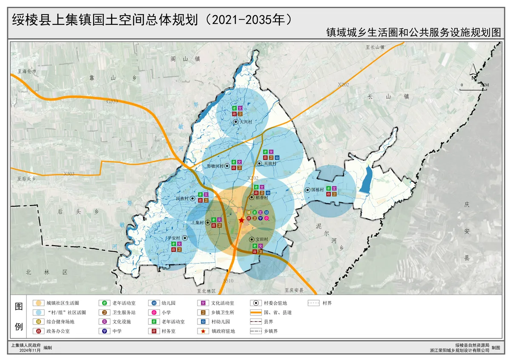
生活圈规划
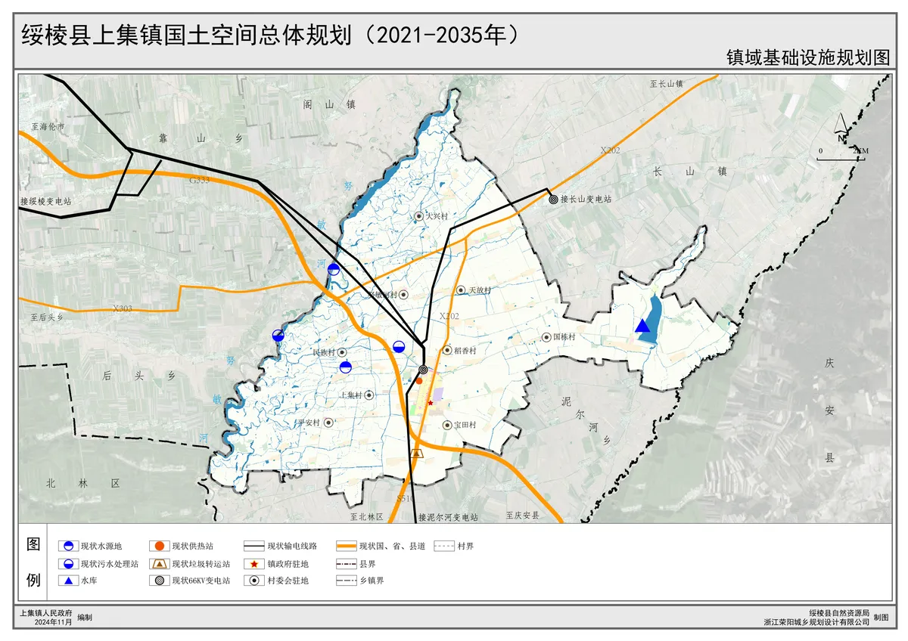
镇域基础设施规划
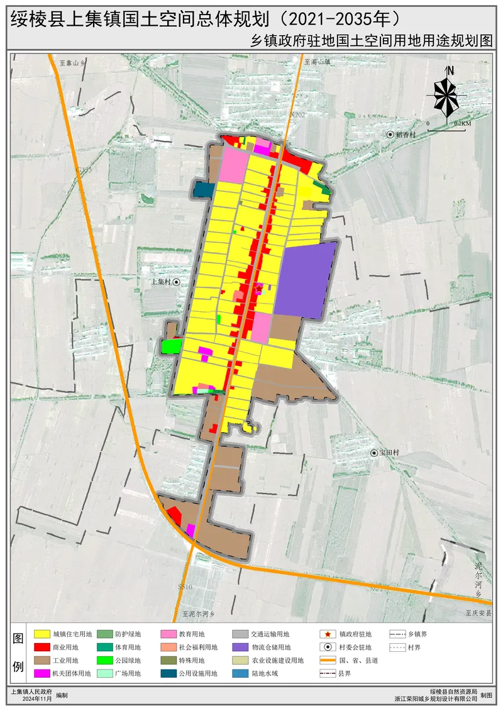
镇政府驻地国土空间用地用海规划
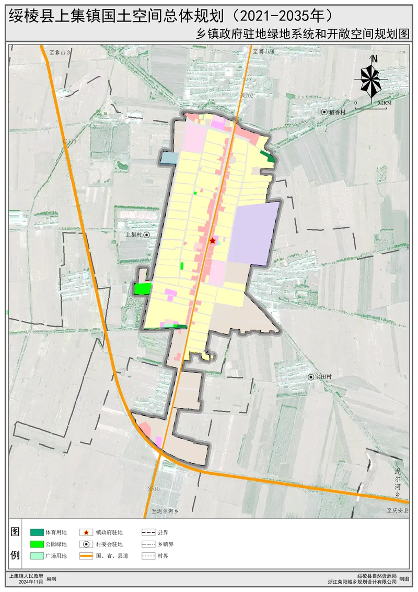
镇政府驻地绿地与开敞空间规划
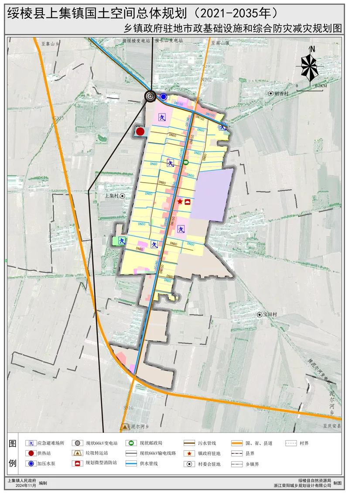
镇政府驻地市政与防灾减灾规划
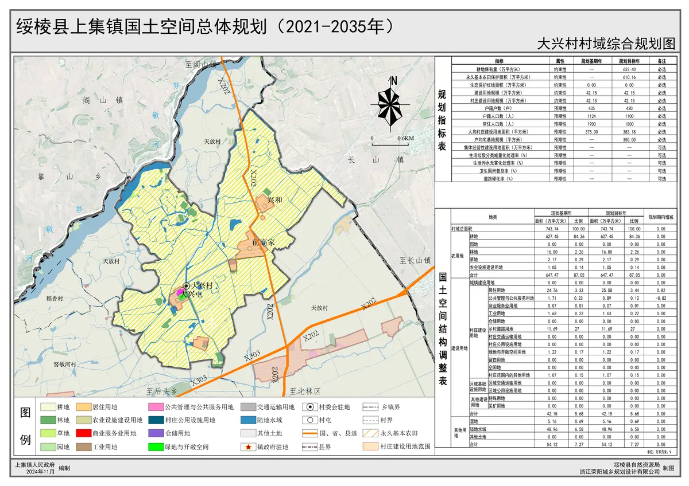
镇域规划传导（村庄）
规划管控表
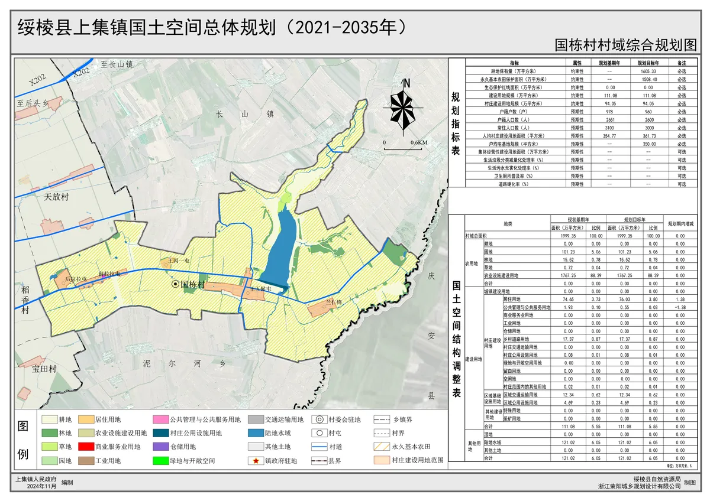
镇域规划传导（村庄）
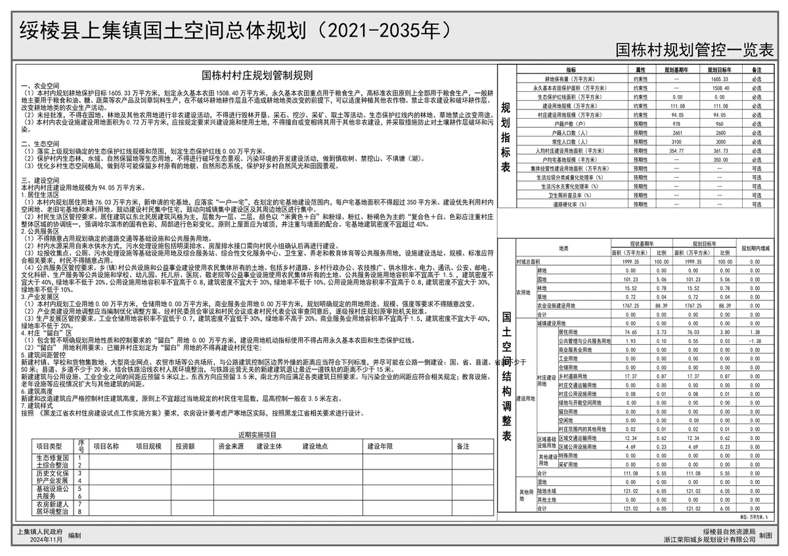
规划管控表
案例二：某镇国土空间总体规划
负责镇域现状分析、控制线划定、总体格局、规划分区、用地规划、生活圈、生态修复、驻地现状及规划系列图件编制。

镇域用地用海现状

镇域国土空间控制线

镇域国土空间总体格局规划

镇域规划分区

镇域国土空间用地用海规划

生活圈规划

镇域生态修复和综合整治规划

镇政府驻地国土空间用地用海现状

镇政府驻地规划分区

镇政府驻地国土空间用地用海规划

镇政府驻地公共服务设施体系规划

镇政府驻地绿地与开敞空间规划

镇政府驻地道路交通规划

镇政府驻地控制线
案例三：某乡镇国土空间总体规划
负责乡镇域现状、控制线、规划分区、用地规划、镇村体系、生活圈、生态修复、驻地系列图件编制。

乡镇域国土空间用地用海现状

乡镇域国土空间控制线

乡镇域国土空间规划分区

乡镇域国土空间用地用海规划

镇村体系规划

生活圈规划

乡镇域生态修复和综合整治规划

乡镇政府驻地国土空间用地用海现状

乡镇政府驻地国土空间用地用海规划

乡镇政府驻地绿地与开敞空间规划

乡镇政府驻地道路交通规划

乡镇政府驻地基础设施与防灾减灾规划

乡镇政府驻地控制线规划